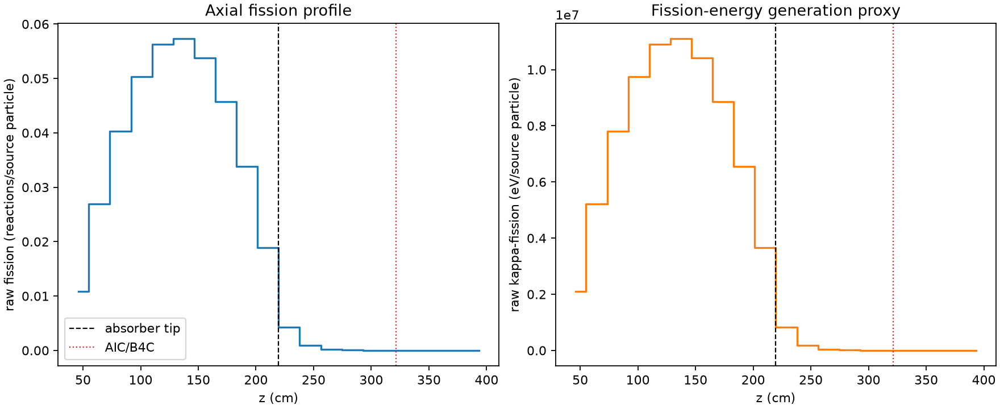
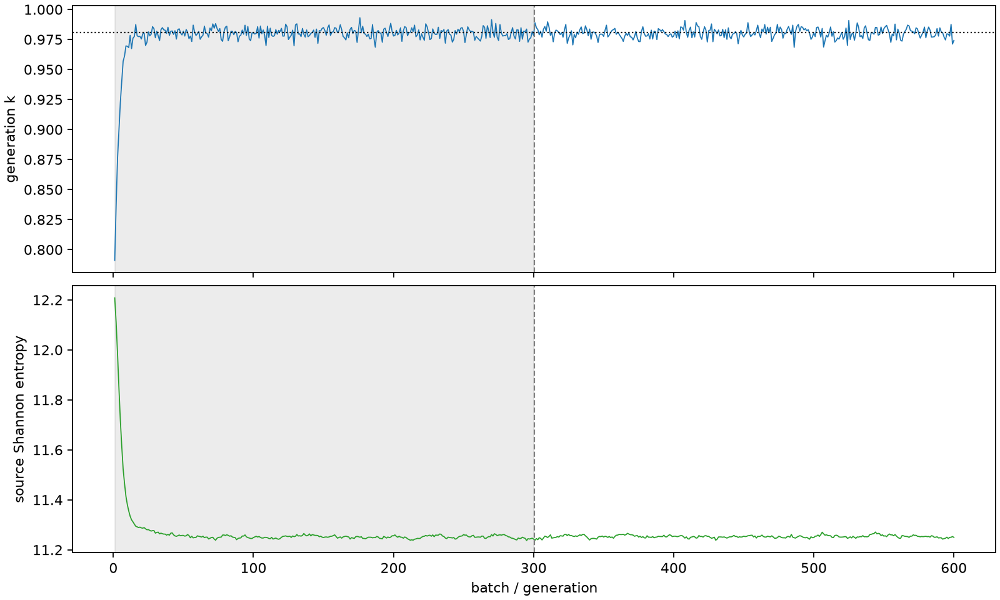

| field | value |
|---|---|
| experiment | V2-STAGE_32_OGRENCI_03-0008 |
| k | 0.9805811116785684 |
| MC standard error | 0.00016879146603551238 |
| seconds | 979.9338389219993 |
| acceptance | not_assessed |
| convergence | review_required |
Completed is output integrity only; physical and statistical review required. Zero tallies do not prove zero production or zero uncertainty.
| diagnostic | value |
|---|---|
| geometric fuel voxels | 5280 |
| zero fission tally voxels | 866 |
| low signal fuel voxels | 1642 |
| low signal fission share | 5.771014167882813e-05 |
| low signal kappa share | 5.774051095575971e-05 |
| important fission share | 0.9501038109308997 |
| previous filter included | 3638 |
| duration estimate s | 1562.5173488400023 |
| actual minus estimate s | -582.5835099180031 |
| fission relative MC error | statistics |
|---|---|
| all_geometric_fuel | {"voxels": 5280, "positive_mean_voxels": 4414, "zero_mean_voxels": 866, "undefined_relative_error_voxels": 866, "median": 0.010150158654789587, "p95": 0.7694075288809659, "maximum": 1.0000000000000002} |
| low_signal | {"voxels": 1642, "positive_mean_voxels": 776, "zero_mean_voxels": 866, "undefined_relative_error_voxels": 866, "median": 0.5590589856851984, "p95": 1.0, "maximum": 1.0000000000000002} |
| important_95pct | {"voxels": 2323, "positive_mean_voxels": 2323, "zero_mean_voxels": 0, "undefined_relative_error_voxels": 0, "median": 0.00678906844451027, "p95": 0.010173850629166365, "maximum": 0.011965461048361126} |
| outside_previous_filter | {"voxels": 1642, "positive_mean_voxels": 776, "zero_mean_voxels": 866, "undefined_relative_error_voxels": 866, "median": 0.5590589856851984, "p95": 1.0, "maximum": 1.0000000000000002} |
| kappa_fission relative MC error | statistics |
|---|---|
| all_geometric_fuel | {"voxels": 5280, "positive_mean_voxels": 4414, "zero_mean_voxels": 866, "undefined_relative_error_voxels": 866, "median": 0.010136846537887106, "p95": 0.7692402625222801, "maximum": 1.0000000000000002} |
| low_signal | {"voxels": 1642, "positive_mean_voxels": 776, "zero_mean_voxels": 866, "undefined_relative_error_voxels": 866, "median": 0.5594000489990862, "p95": 1.0, "maximum": 1.0000000000000002} |
| important_95pct | {"voxels": 2323, "positive_mean_voxels": 2323, "zero_mean_voxels": 0, "undefined_relative_error_voxels": 0, "median": 0.006780320770590656, "p95": 0.010161767879110146, "maximum": 0.011949416323891533} |
| outside_previous_filter | {"voxels": 1642, "positive_mean_voxels": 776, "zero_mean_voxels": 866, "undefined_relative_error_voxels": 866, "median": 0.5594000489990862, "p95": 1.0, "maximum": 1.0000000000000002} |
| axial bin | fission share | kappa-fission share |
|---|---|---|
| 1 | 0.02713697748908395 | 0.02713832694936192 |
| 2 | 0.06737560879998791 | 0.06737539432500737 |
| 3 | 0.10072425816931697 | 0.10072364071497224 |
| 4 | 0.12594098682191743 | 0.12594001831622015 |
| 5 | 0.14071951233279223 | 0.14071794607351304 |
| 6 | 0.14334344483887607 | 0.1433422518387274 |
| 7 | 0.13468224268228285 | 0.13468131393127028 |
| 8 | 0.11456449146661504 | 0.11456345623613082 |
| 9 | 0.0847116289879973 | 0.08471082804997257 |
| 10 | 0.04721962867137492 | 0.04721991049046896 |
| 11 | 0.010596547827984686 | 0.010600805871560764 |
| 12 | 0.0022959865156379046 | 0.0022970805202966234 |
| 13 | 0.0005321535591567263 | 0.0005324117311699534 |
| 14 | 0.00012656230244497077 | 0.00012662270070289418 |
| 15 | 2.5030341744033055e-05 | 2.504991352908426e-05 |
| 16 | 4.431432590534738e-06 | 4.43387663089748e-06 |
| 17 | 4.6541339158038444e-07 | 4.6594436259182075e-07 |
| 18 | 3.8458209301014826e-08 | 3.855894745533579e-08 |
| 19 | 3.888595554102752e-09 | 3.957155011192622e-09 |
| 20 | 0.0 | 0.0 |
Histories include the inactive-to-active transition at batch 300. kappa-fission approximates fission energy production, not total heat deposition.

